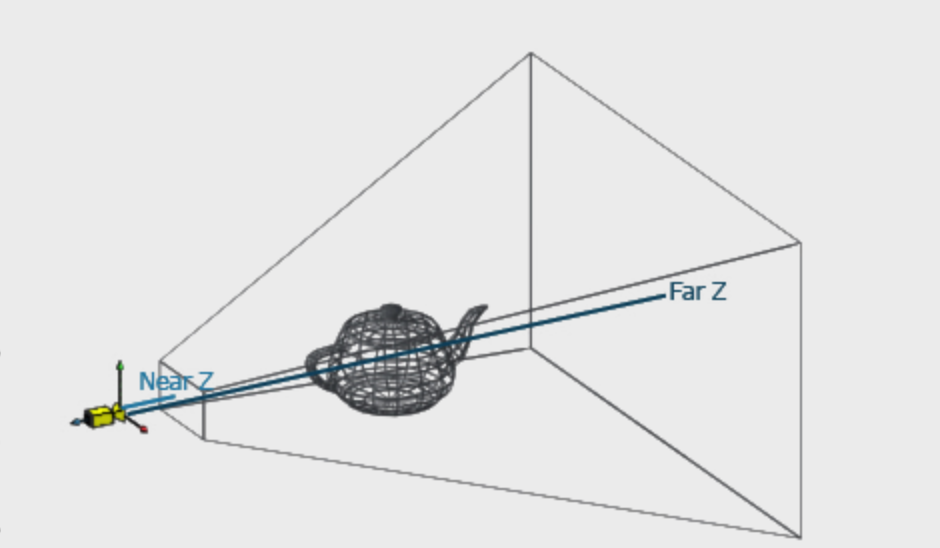

坐标系有哪些？
- Object or model coordinates
- World coordinates
- Eye (or Camera) coordinates
- Clip coordinates
- Normalized device coordinates
- Window (or screen) coordinates
下图就详细的介绍从物体本身坐标到屏幕坐标经历了什么

- 模型变化
每一个模型都存在自己的模型空间中，有自己的模型坐标。如果想把模型（物体）处在空间关系中（例如，桌上上有一个茶壶和一个杯子），就需要转化成一个共同的空间，那么这就来到了世界空间。
- 视图变化
世界空间到观察空间（相机空间），相当让摄影机在原点居中并观察物体，重新映射了世界空间。
- 投影变化
从观察空间需要投影到虚拟屏幕上（投影空间/裁剪空间），有两种常用的投影： 正投影 透视投影，可以分别想象视区是长方体和平截头体，参考图2 图3，如何计算参考 OpenGL Projection Matrix


- 视口变化
从裁剪坐标到屏幕坐标，裁剪坐标会将投影变化后不在 (-1,1)坐标裁剪，视口变换会将 -1.0～1.0范围的坐标转化到ViewPort函数内。
推荐文章